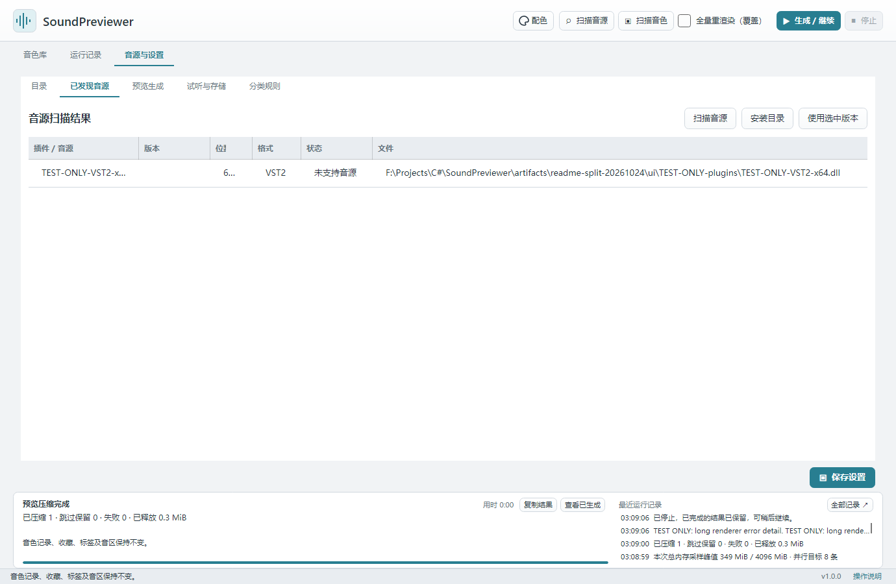
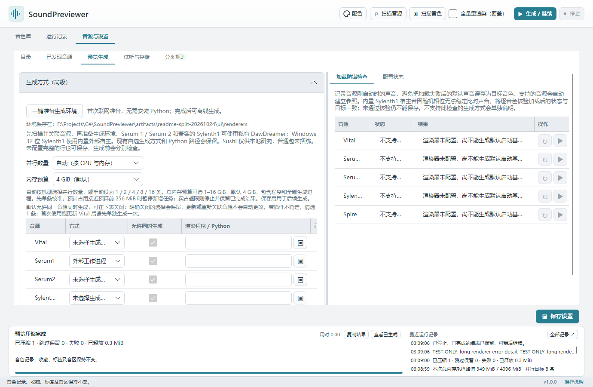

音源与生成环境
本页内容：
支持范围
“可生成”表示已有生成方式，具体音源版本、授权和外部资源仍须在你的电脑上核对。Windows 与 Mac 共用操作界面；安装包能启动与某个插件实际能生成声音是两项不同的检查。
| 音源 | 可生成预览的音色文件 | 生成前需要准备 | 已有真实样本验证 |
|---|---|---|---|
| Vital | 独立 .vital；通过内嵌资源检查的 .vitalbank 包内音色 |
Windows / Mac 的 Vital 独立程序，使用「Vital 原生」 | Windows 历史样本及 Vital 1.6.4 的两条包内音色；Apple Silicon 已验证独立测试音色，包内生成尚待实机验证 |
| Serum 1 | 独立 .fxp |
VST2 插件及一键准备的 DawDreamer 环境 | Windows Serum 1.334 x64；历史五音色并行实测见并行说明；Mac 尚待真实插件验证 |
| Serum 2 | 原生 .SerumPreset |
VST3 插件及带 Serum 2 依赖的 DawDreamer 环境 | Apple Silicon / Serum 2 2.0.23 的两个工厂音色；Windows、Intel Mac 尚待真实插件验证 |
| Sylenth1 | 独立 .fxp |
Windows x86 插件可用随包宿主；其他匹配架构的 VST2 需 DawDreamer | Windows Sylenth1 2.2.1.2 x86；五个音色完成 1 / 2 / 4 条实测，其他组合尚待验证 |
| Spire | 暂不生成 | 可扫描 .spf、.spf2、.sbf、.swzip，保留记录并显示「无法预览」 |
尚无真实插件生成验证 |
Vital 音色包请先重新「扫描音色」：内嵌波表和采样完整、资源格式已覆盖的条目会变为「待生成」，可直接使用「Vital 原生」生成。程序只读取所选条目，在当前生成任务的私有临时目录内加载，不导入或更改 Vital 全局资源目录。资源不完整或使用尚未覆盖的类型时，显示「无法预览」并给出具体原因；可在 Vital 中导入后导出独立 .vital，再扫描导出目录。音色包最大 256 MiB，包内独立预制最大 16 MiB。
.fxb 银行及其他尚未支持的银行内容仍不能直接生成预览，请先在对应音源中导出独立音色，再添加其目录。Serum 2 的旧 .fxp 需在 Serum 2 中导入并另存为 .SerumPreset，直接改扩展名无效。无法可靠判断归属的文件会显示「无法预览」，详情提示核对并指定所属音源。
更多版本与样本记录见 音源验证记录。这些样本不代表所有音色、插件版本或外部采样资源都已验证。
计划支持的音源
Spire 原生预览生成：目前已建立专用格式的扫描与索引，后续需验证真实插件加载、音色槽位与依赖资源，完成后才开放生成。其他新增音源尚无确定排期；FXB 银行槽位遍历也仍待实现。现阶段请按上表选择已有生成方式。
扫描并关联音源
点击顶部「扫描音源」，在「音源与设置 → 已发现音源」查看结果。程序会从常见安装位置查找；找不到时，在「目录」页添加音源安装目录后重新扫描。
可选中正确的插件版本，点击「使用选中版本」。优先使用与本机架构匹配的插件。扫描到插件后，还需确认下一步的生成方式；扫描本身不会演奏音色。
确认预览生成方式
在「音源与设置 → 预览生成」检查配置：
- Vital：选择 Vital 独立程序，方式为「Vital 原生」。只有 VST 插件文件时，不能直接使用这条原生路径。
- Windows 的 Sylenth1 x86：匹配后可使用随包的独立宿主。如果提示缺少运行库，请从 Microsoft 官方页面 安装 VC++ x86 运行库。
- Serum 1 / Serum 2 / 使用 DawDreamer 的 Sylenth1：点击本页「一键准备生成环境」，首次联网下载，成功后自动填入私有环境路径；再核对关联的插件文件。
检查音源的实际版本，点击「保存设置」。私有环境与当前程序架构一致；Windows 的 DawDreamer 路径使用 x64，不能加载 x86 插件。
「渲染程序」与「已关联插件」是两个位置：Serum 1 的 DawDreamer 方式应选择 Python 程序，插件则选择 64 位 Serum_x64.dll，不能把 DLL 当作 Python。未配好的音源也能先保存，不会挡住其他设置；「配置状态」会分别说明缺少什么。若已在本程序的 Preview/renderers 准备默认环境，空白的 DawDreamer 程序路径会自动填入；自选和暂时离线的路径会保留。
Sushi（本地研究）：保留手动配置入口，安装包不包含该宿主，也不自动切换。已有实验的适用范围及构建入口见研究记录。日常公开测试采用上面的私有 DawDreamer 环境。
「加载防错检查」通常自动进行。内置 Windows x86 Sylenth1 宿主遇到启动声音随机波动时，可改用逐音色的精确状态回读；状态与目标不一致或无法核验时仍拒绝保存。这不表示声音比对已稳定，生成结果仍需试听确认。Vital 原生方式不支持这项声音参照检查，也不会因此被禁止生成。
Sylenth1 的加载状态需要可核验。若提示“状态完全未变”或回读格式不同，当前插件未能提供可核验的加载结果；请使用匹配版本的 Sylenth1，或在对应版本中重新导出独立 FXP。这类明确不兼容的加载不会在同一次队列中重复尝试。
并行和内存配置见生成与试听。
一键准备 DawDreamer
仅使用 Vital 原生或 Windows 随包的 Sylenth1 x86 宿主时，可以跳过本节。
打开「音源与设置 → 预览生成」，点击 「一键准备生成环境」。无需了解 Python，也无需单独安装 Python 或 uv。首次需要联网，完成后可离线生成；Serum 2 所需组件也会一并准备。下载或检查失败时保留已有环境和缓存，可稍后重试。
程序只随包携带下载工具 uv；Python、DawDreamer 和下载缓存保存在程序旁的 Preview/renderers。不修改系统 PATH、Python 注册信息或用户的 uv / Python 配置。Windows 所需的 x64 C++ 运行库使用私有副本，无需为这条生成路径另装运行库。
成功后会自动补齐未配置且已发现匹配插件的音源，并修复本程序私有环境的失效旧路径；已有自选生成方式和可用的旧 Python 环境保留。未扫描到插件时，请先扫描音源，再选择版本。准备过程只检查空宿主，不安装商业插件，也不代表所有音色已通过验证。
也可以先准备环境，再扫描或关联插件；程序会为已确认兼容的插件补齐生成方式，已有自选宿主保持原样。
关闭程序后，可把整个程序目录连同 Preview 与 Config 一起移动；新私有环境使用相对清单，重开时自动定位。原音色文件、插件以及以前手动配置的外部环境仍需核对实际路径。命令行与高级参数见 生成环境说明。


保存设置后按快速开始的单音色测试检查实际输出；配置状态或加载失败说明见常见问题。